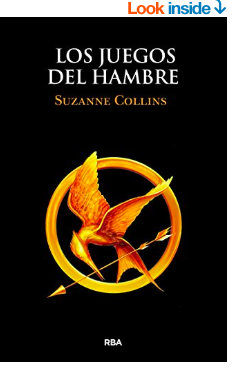

|
Leones legendarios |
|
Leones legendarios |
Cien años de soledad:"Muchos años después, frente al pelotón de fusilamiento el coronel Aureliano Buendía había de recordar aquella tarde remota en que su padre lo llevó a conocer el hielo" |
||
|  |
Juegos del hambre: GANAR SIGNIFICA FAMA Y RIQUEZA. PERDER SIGNIFICA UNA MUERTE SEGURA. En una oscura versión del futuro próximo, doce chicos y doce chicas se ven obligados a participar en un reality show llamado Los juegos del hambre. Solo hay una regla: matar o morir. Cuando Katniss Everdeen, una joven de dieciséis años se presenta voluntaria para ocupar el lugar de su hermana en los juegos, lo entiende como una condena a muerte. Sin embargo Katniss ya ha visto la muerte de cerca y la supervivencia forma parte de su naturaleza. ¡Que empiecen los septuagésimo cuartos juegos del hambre! |
Autor: Marcos Witt- |